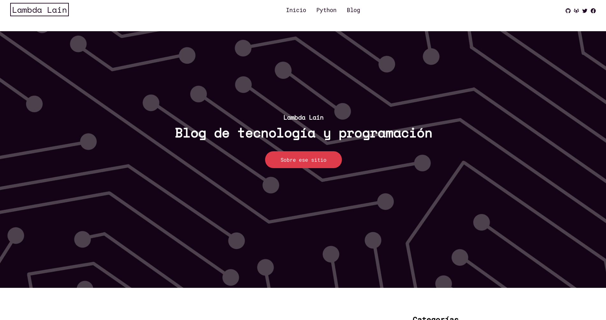

if you can imagine it, you can code it.

I am really really proud of this project. It was the first "real" website I ever made. I had hardly any knowledge, just loose things that I had seen from time to time and after a streak of 11 hours of continuous work I was able to finish programming it. It has many design issues that I discovered after learning responsive and web development in general, but I want to leave it as is as a reminder of where I started.
This page started with the idea of write a blog about what I learned and what I reflect about technology, as well as a series of programming courses that I planned from start to finish, although the format quickly fell short and I decided to move this idea to my youtube channel that you can also find in the section of my works!
If you want you can take a look at the code in the github repository!
Or you can visit the page on the github pages link!